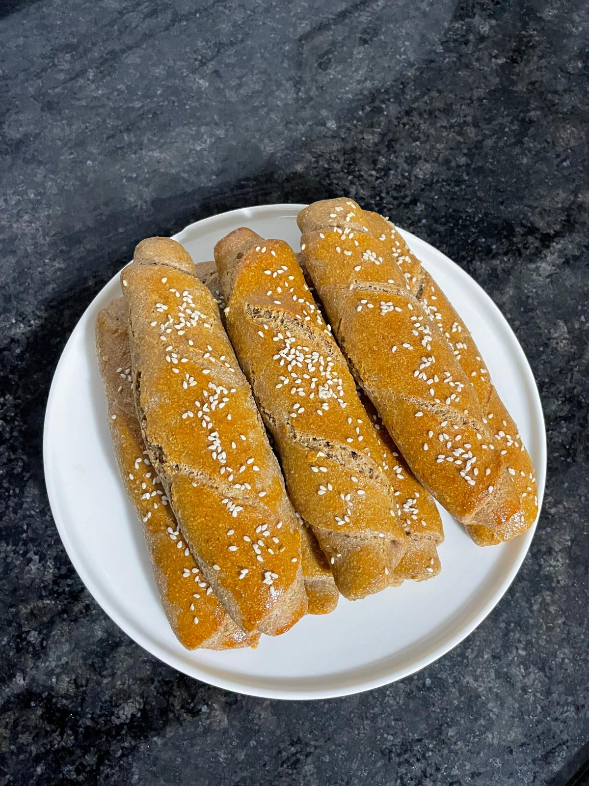
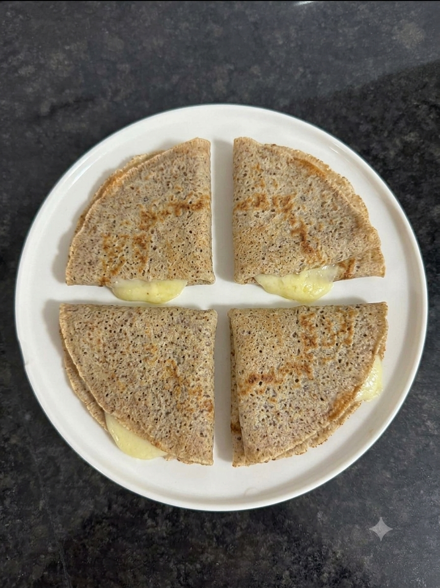
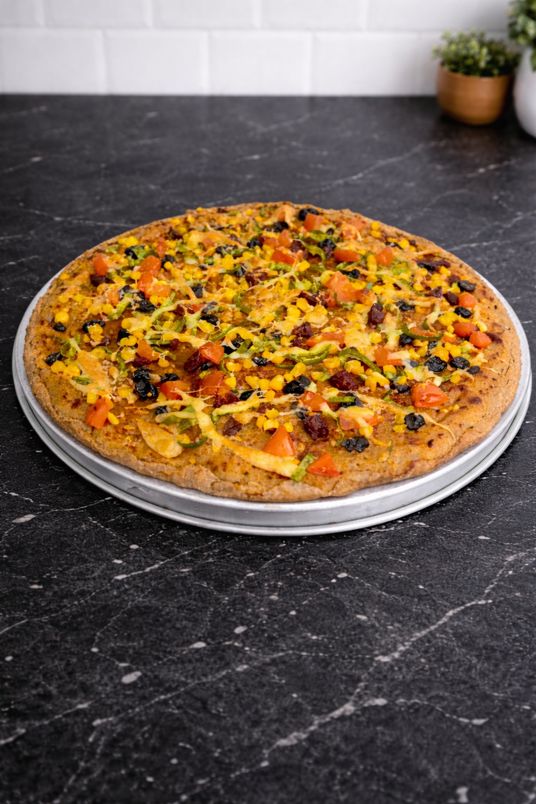
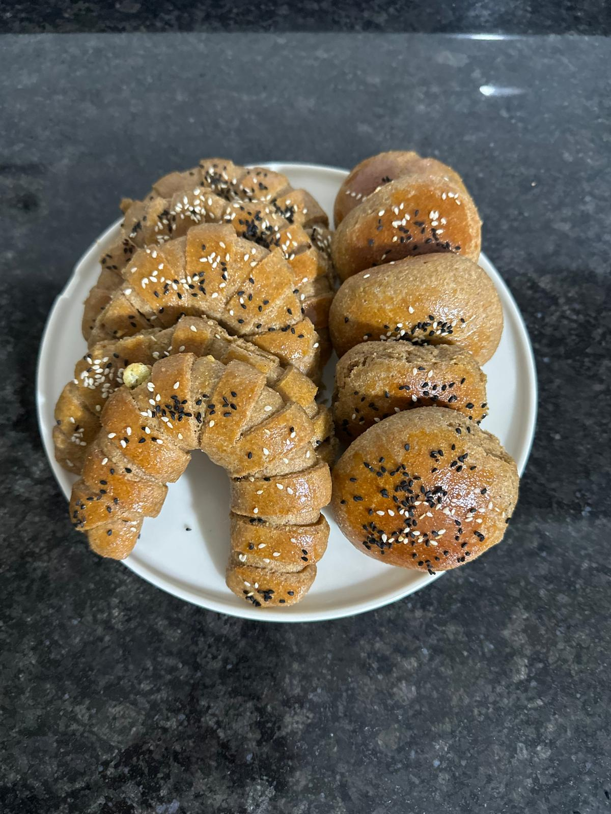

Tam Buğdaylı Ekmek
Tam buğday unuyla hazırlanan, doyurucu ve günlük tüketim için ideal bir ev ekmeği.
Tarifi Gör
Tam Buğdaylı Krep
Kahvaltıya pratik, kolay yapılabilecek tam buğdaylı lezzetli bir krep.
Tarifi Gör
Tam Buğdaylı Poğaça
Tam buğday unuyla hazırlanan, kolay hazırlanan lezzetli bir poğaça.
Tarifi Gör
Tam Buğdaylı Pizza
Tam buğday unuyla hazırlanan, evde kolayca yapılabilen sağlıklı bir pizza.
Tarifi Gör
Yumuşak Tam Buğdaylı Poğaça
Yumuşak dokulu, kolay hazırlanan ve çay saatlerine çok yakışan bir poğaça.
Tarifi Gör
Ramazan Pidesi
Ramazan pidesi, iftar sofralarının vazgeçilmezidir; çıtır dışı ve yumuşak içiyle sıcak servis edilir.
Tarif Gör